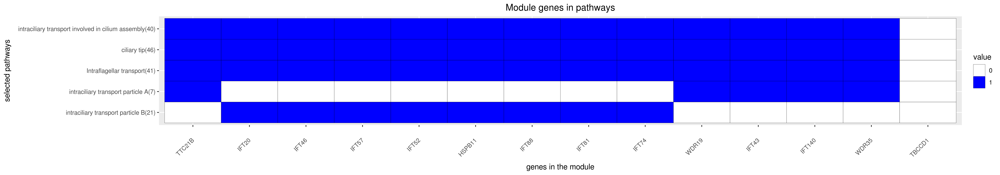

DREAM Module Identification Challenge – Consensus modules
PPI-STRING_Consensus_mod204
| Assigned name |
NA |
| Network |
PPI-STRING |
| Module ID |
PPI-STRING_Consensus_mod204 |
| Module size |
14 genes |
|
Module genes
This module comprises the following genes:
| Gene ID |
Gene Symbol |
Gene Name |
| 51668
|
HSPB11
|
heat shock protein family B (small) member 11
|
| 9742
|
IFT140
|
intraflagellar transport 140
|
| 90410
|
IFT20
|
intraflagellar transport 20
|
| 112752
|
IFT43
|
intraflagellar transport 43
|
| 56912
|
IFT46
|
intraflagellar transport 46
|
| 51098
|
IFT52
|
intraflagellar transport 52
|
| 117028
|
IFT57
|
bridging integrator 1
|
| 80173
|
IFT74
|
intraflagellar transport 74
|
| 28981
|
IFT81
|
intraflagellar transport 81
|
| 8100
|
IFT88
|
intraflagellar transport 88
|
| 55171
|
TBCCD1
|
TBCC domain containing 1
|
| 79809
|
TTC21B
|
tetratricopeptide repeat domain 21B
|
| 57728
|
WDR19
|
WD repeat domain 19
|
| 57539
|
WDR35
|
WD repeat domain 35
|
|
Functional annotation
Modules were tested for enrichment in functional and pathway annotations using two complementary approaches:
1. To select a small number of specific / non-redundant annotations for each module, a regression-based approach was used;
2. To obtain the complete set of enriched annotations, an extension of Fisher’s exact test that takes annotation bias into account was employed (Wallenius’ non-central hypergeometric distribution).
Most specific annotations for this module
1Regression coefficient
2Fisher’s exact test nominal P-value
3Annotation source (Reactome, GO biological process (BP), molecular function (MF) and cellular component (CC))
4GO category or Reactome pathway
5High-level branch of annotation tree
Gene membership

All enriched annotations
Gene Ontology
11Nominal enrichment p-value (Wallenius’ noncentral hypergeometric distribution)
2FDR corrected p-value (Benjamini-Hochberg)
Mouse mutant phenotypes
11Nominal enrichment p-value (Wallenius’ noncentral hypergeometric distribution)
2FDR corrected p-value (Benjamini-Hochberg)
Generated on: Thu Aug 23 09:54:32 2018 - R2HTML